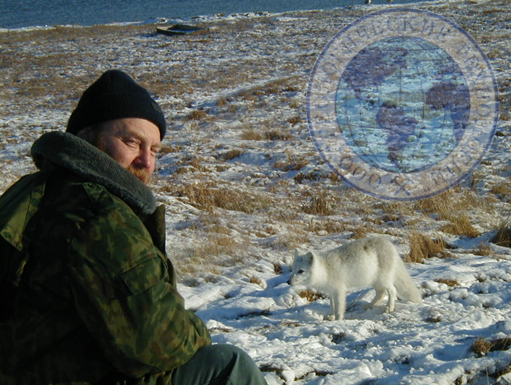
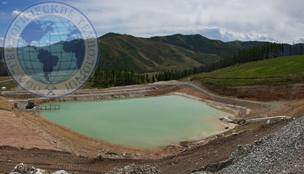
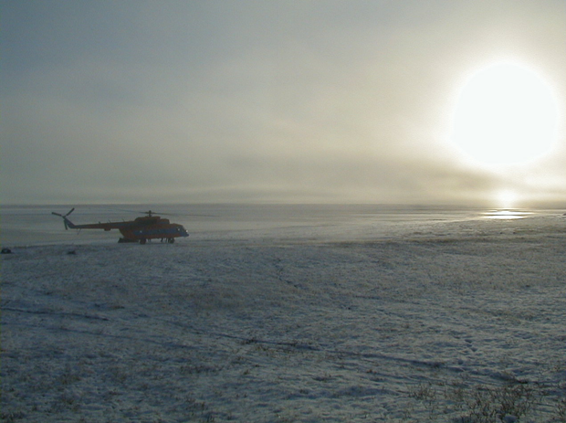

Экологические исследования
Мы выполняем следующие основные виды экологических исследований:
- Работы по исследованию фонового состояния окружающей природной среды с подготовкой и согласованием Отчета о фоновом состоянии окружающей природной среды.
- Разработка программ и проектов экологического мониторинга окружающей природной среды.
- Разработка экологических разделов в отчетах о результатах разведки месторождений с подсчетом запасов и ТЭО кондиций.
- Разработка экологической части проектов разработки месторождений твердых полезных ископаемых.
- Разработка нормативов предельно-допустимых выбросов загрязняющих веществ в атмосферный воздух, нормативов допустимых сбросов, проектов нормативов образования отходов и лимитов на их размещение;
- Подготовка и согласование государственных статистических отчетов предприятий, в том числе форм 2-тп (воздух), 2-тп (отходы), 2-лс, 4-ос и др.
- Разработка и выполнение программ производственного экологического контроля
- Разработка деклараций безопасности гидротехнических сооружений.
- Разработка и утверждение проектов санитарно-охранных зон.
- Выполнение всех видов работ экологического содержания на действующих предприятиях


